「AmbientでIoTをはじめよう」、第20回はM5Stackで距離を測ります。
M5Stack社から、「M5StickC」という新しい端末がリリースされ、日本でも販売が始まりました。 「AmbientでIoTをはじめよう」の第20回はこの「M5StickC」を使って小型の環境センサ端末を作ります。
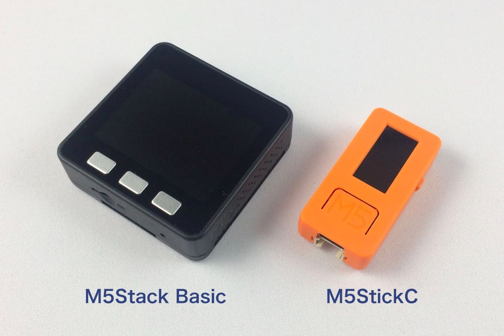
M5StickCは、上の写真の右のように4.8 x 2.4 x 1.4cmのスティック状の小型端末です。MPUはM5Stackで使われているESP32と同じアーキテクチャのESP32-picoが使われています。MPUの他に、80 x 160ピクセルのカラー液晶画面、ボタン3個、LED、赤外線送信機、マイク、6軸加速度・ジャイロセンサなどが搭載されています。プログラムはArduino IDEか、UIFlowという開発環境を使ってBlocklyまたはMicroPythonで開発します。
M5StickCのスペックを、 M5Stackシリーズと合わせてまとめました。
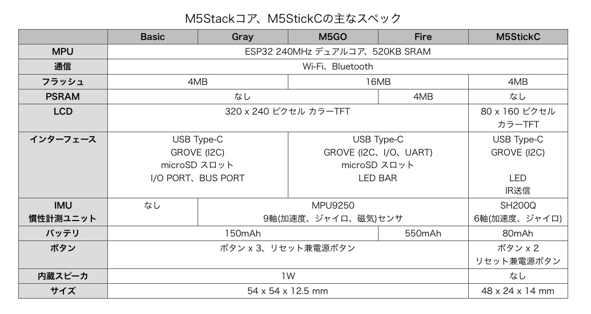
M5StickCとM5Stackを比較すると、サイズの違いの他に、LCDも80×160ピクセルとサイズが小さくなり、M5StackにあるmicroSDカードスロットがありません。スピーカーも便利なのですが、M5StickCにはありません（今後、拡張ハットとして提供されるようです）。逆にM5StickCには赤外線LEDと6軸の加速度・ジャイロセンサがついています。
パソコンとの接続はM5Stackと同じくType-C USBケーブルを使います。その他、I2CのGeoveポートと、8ピンの拡張ソケットがついています。
LCDの下に大きめのボタンがあり、M5StickCを手に持って、何かを制御するコントローラとしても使えそうです。
M5StickCは、下の写真のようなパッケージに入って届けられます。
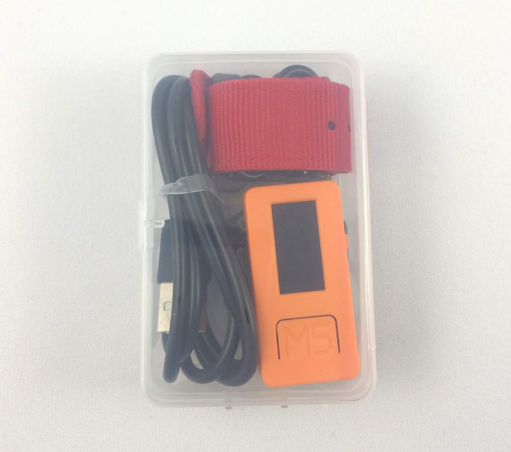
パッケージの中には次の写真にあるものが同梱されています。
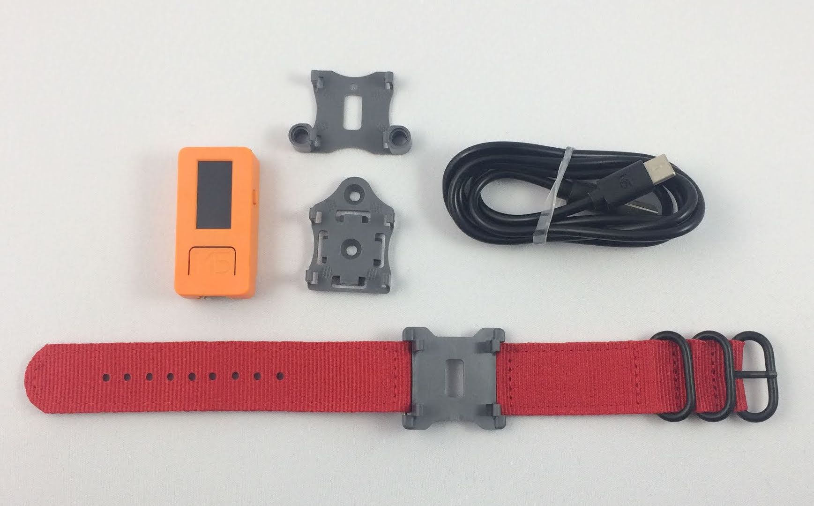
同梱物
腕時計マウンタ、LEGO互換マウンタはホビー向けですが、ネジ固定用マウンタはホビーに限らず、幅広い用途を想定しているように思います。
Arduino IDEのインストールは「M5StickC クイックスタート」に書かれていますが、M5Stackのセットアップと違う点だけを解説します。
Arduino IDEをインストールした後、ボード情報を設定します。M5StickCのボード情報は「M5Stick-C」を選択します。
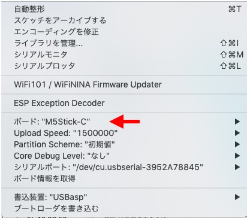
「M5Stick-C」はESP32のボード情報のバージョンが1.0.2以上でないと選択肢に現れません。ボード情報に「M5Stick-C」が現れないときは、ESP32のバージョンを1.0.2以上に更新してください。Arduino IDEの「ツール」メニュー→「ボード」→「ボードマネージャ…」を選択して、ボードマネージャを立ち上げ、検索窓に「esp32」と入力して、「esp32 by Espressif Systems」を選び、1.0.2以上のバージョンをインストールします。
「M5Stick-C」はビルドしたスケッチを転送する速度が最高1.5Mbpsに高速化されています。ボード情報を「M5Stick-C」に設定すると、転送速度（Upload Speed）は1.5Mbpsに設定されます。
M5StickCでは、LCDなどにアクセスするシステム関数もライブラリとして提供されているので、インストールします。Arduino IDEの「スケッチ」メニュー→「ライブラリをインクルード」→「ライブラリを管理…」でライブラリマネージャを立ち上げ、検索窓に「m5stickc」と入力します。検索結果に現れた「M5StickC by M5StickC」の最新版をインストールします。
これで、Arduino環境のセットアップは完了です。
M5StickC用のArduino環境がセットアップできたら、センサをつないでみます。M5StickCにはGroveポートと、Groveポートの反対側に拡張ソケットがあり、そこにセンサをつなげられます。
M5Stackのセンサユニットで、温度、湿度、気圧が測れる「Env（環境）」ユニットというものがあります。国内では単品では販売されていませんが、「M5GO IoTスターターキット」に含まれています。今回はこの「Env」ユニットをM5StickCにつないで温度、湿度、気圧を測ってみます。
「Env」ユニットは、I2CのGroveポートで接続するので、M5StickCのGroveポートに挿すだけで接続完了です。
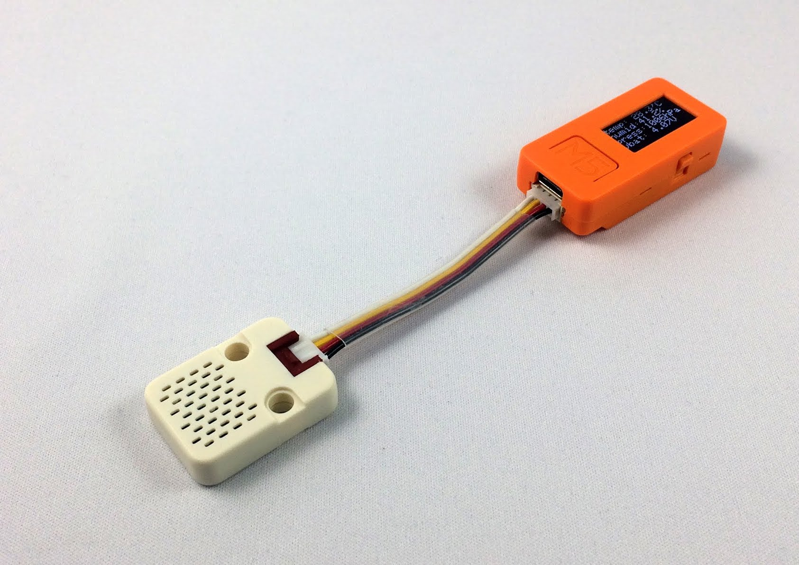
「Env」ユニットにはDHT12という温度、湿度センサと、BMP280という気圧センサが内蔵されています。
ArduinoでDHT12にアクセスするライブラリは公開されたものがあり、BMP280ライブラリはAdafruit社が公開しています。Arduino IDEのライブラリマネージャを立ち上げ、検索窓から「bmp280 adafruit」と検索して、BMP280ライブラリをインストールします。
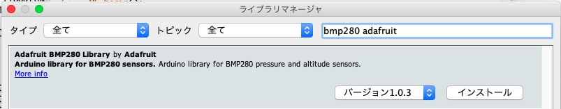
「Env」ユニットで温度、湿度、気圧を測るプログラムは次のようになります。
M5Stackのプログラムは M5Stack.h をインクルードしますが、M5StickCのプログラムは M5StickC.h をインクルードします（A）。
M5.Axp.ScreenBreath(10) はスクリーンの輝度を制御するAPIで、7から15の値が指定できます。10に設定して、再高輝度よりやや輝度を落としています（B）。M5Stackでは M5.Lcd.setBrightness というAPIでしたが、M5StickCではM5.Axp.ScreenBreathに変更になりました。
M5.Lcd.setRotation(3) は画面を90°単位で回転させるAPIです（C）。引数に3を指定すると、M5StickCの左側が上になり、画面を横長に使えます。M5StickCは画面が小さいので、表示したい情報に合わせて、画面を有効に使うとよさそうです。
I2Cを制御するWireライブラリなどはM5Stackと同じように使えます。
M5.Axp.GetVbatData() はM5StickCのバッテリー電圧を取得するAPIです（D）。
このプログラムをビルドして実行すると、写真5のように温度、湿度、気圧とバッテリー電圧がLCDに表示されます。
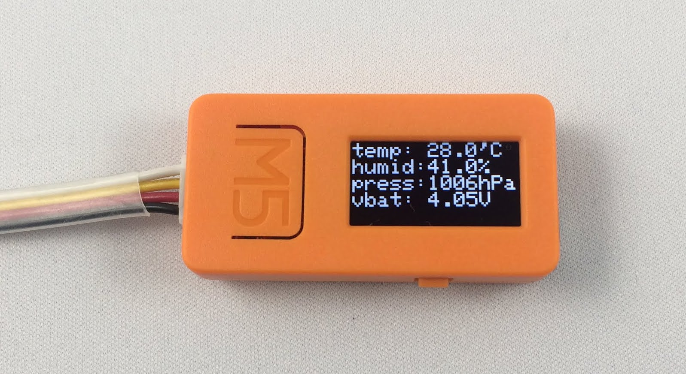
M5StickCに搭載されているMPU、ESP32はWi-FiとBluetoothで通信ができます。ここではWi-Fiでセンサデータをクラウドサービスに送信して、可視化してみます。
クラウドサービスとしては、著者が運営するシンプルなIoTデータ可視化サービス「Ambient」を使います。
Wi-Fiに接続する方法、Ambientにデータを送信する方法はM5Stackのときと全く同じです。プログラムは次です。
WiFi.begin 関数でWi-Fiのアクセスポイントに接続します（A）。
Ambientにデータを送信するには、ambient.set 関数で送信するデータをセットし、ambient.send 関数で送信するだけです（B）。
上のプログラムでは、センサからデータを取得し、Wi-Fiアクセスポイントに接続して、データをクラウドサービスに送信した後、deep sleepモードに移行しています（C）。指定した時間経過した後に、再びプログラムの先頭から動き始めます。Deep sleepの方法もM5Stackと同じです。
このように、M5StackとM5StickCは、同じESP32マイコンを使っているため、setBrightness と ScreenBreath のように一部変更になったシステム関数はあるものの、ほとんど同じ感覚でプログラミングできます。
次にデータをM5StickCからBluetooth Low Enrgy（BLE）で送ってみます。
BLE通信は、センサ端末（ペリフェラル）とセンター側の端末（セントラル）がコネクトしてデータを送受信するコネクトモードと、ペリフェラルがセンサデータなどをアドバタイジングパケットに載せて送り、セントラルがそれを受信するブロードキャストモードがあります。今回はセンサ端末の通信に向いたブロードキャストモードを使います。
セントラル側はM5Stackを使います。
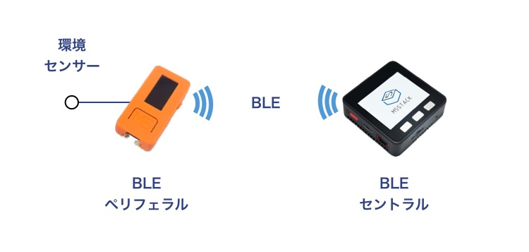
ブロードキャストモードでは、センサ端末がセンサデータをアドバタイジングパケットの中のアドバタイジングデータという最大31バイトのデータ領域に載せて発信します。
アドバタイジングデータの「AD Type」というフィールドを0xFFにすることで、メーカー独自のデータが定義できます。「カンパニーID」には0xFFFFというテスト用のIDがあるので、今回はテスト用IDを使います。それ以降のフィールドは、次のように定義して使います。
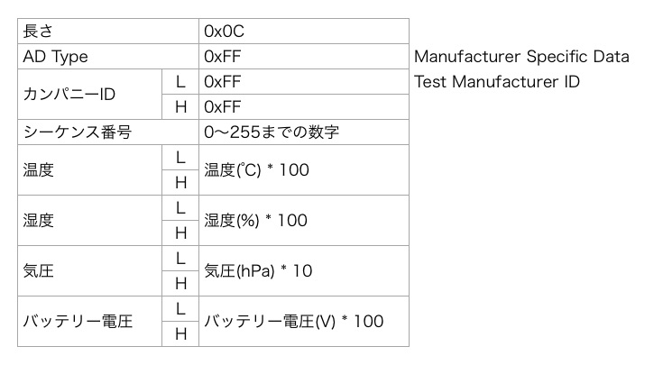
ブロードキャストモードでアドバタイジングパケットを送信する部分は次のプログラムです。温度、湿度、バッテリー電圧は値を100倍、気圧は10倍してアドバタイジングパケットにセットすることで、アドバタイジングパケットにはデータを16ビット整数で格納しています。受信側では温度、湿度、バッテリー電圧の値を100分の1、気圧の値を10分の1にして、元の値に戻します。
プログラム全体はGithubに公開したので、ご覧ください。
10秒間アドバタイジングパケットを送信し、290秒間deep sleepするようにしました。
アドバタイジングパケットを受信するセンター側はM5Stackを使いました。
アドバタイジングパケットをスキャンし、AD Typeが0xFFで、カンパニーIDが0xFFFFのデータを探します。送信側でパケットにシーケンス番号を付加してあり、1つ前に受信したシーケンス番号と比較してシーケンス番号が新しいパケットのときだけパケットを処理します。こうすることで、10秒間送信されるアドバタイジングパケットを複数回処理してしまうことを避けています。
最後に、パケットから温度、湿度、気圧、バッテリー電圧を取り出し、M5StackのLCDに表示しています。
プログラム全体はGithubをご覧ください。
M5StickC、M5Stack、それぞれにプログラムをダウンロードして、実行すると、M5StickCで測定したデータがBLEでM5Stackに送られて、表示されるのが確認できます。
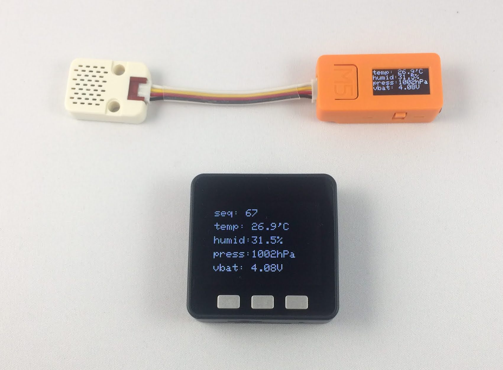
M5Stackに3つのボタンがあり、次のシステム関数で状態を得られました。
M5StickCにはLCDの下に大きなボタンAと、右側面にボタンBの2つのボタンがあります。2つのボタンはGPIO37とGPIO39につながっています。
M5Stackのようなシステム関数は提供されておらず、digitalRead関数で状態を読みます。ボタンAとボタンBはM5StickC.hの中で次のように定義されています。
#define M5_BUTTON_HOME 37
#define M5_BUTTON_RST 39
M5StickCライブラリに添付されているサンプルスケッチを見ると、次のようにボタンの状態を読んでいます。
if (digitalRead(M5_BUTTON_HOME) == LOW) {
// ボタンを押されたときの処理
while (digitalRead(M5_BUTTON_HOME) == LOW) ;
}
テストプログラムを作って、動作を確認したところ、上のコードでも、チャタリング(ボタンの機械的なバタつき)もなく、ボタンの状態が読めています。
M5StickCにはUSBポートと反対側に拡張ソケットがあります。M5Stackのボトムモジュールにあるピン・ソケットと同じように、ジャンパワイヤを使ってセンサなどをつなぐこともできますが、ここに接続する専用のハットが用意されています。
原稿執筆時点（2019年6月）で、M5Stack.comサイトには次の製品が掲載されています。
3月にM5Stack社のオフィスを訪問したときには、GPSや非接触温度センサなども予定しているとのことだったので、今後、続々といろいろなセンサハットが提供されることでしょう。日本ではまだ販売されていませんが、販売が待たれます。
これらを使うと、非常にコンパクトなセンサ端末が作れるので、M5StickCの利用用途もさらに広がりそうです。